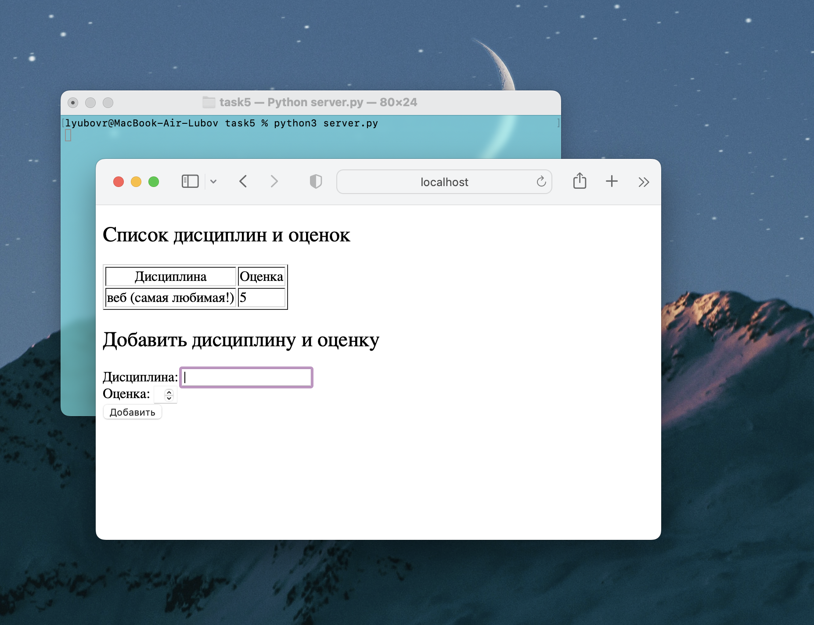

task 5
server.py
import socket
class MyHTTPServer:
def __init__(self, host, port):
# Конструктор класса, инициализирующий сервер
self._host = host
self._port = port
self.data = [] # Список для хранения данных о дисциплинах и оценках
def run(self):
# Метод для запуска сервера
server_socket = socket.socket(socket.AF_INET, socket.SOCK_STREAM)
try:
server_socket.bind((self._host, self._port))
server_socket.listen()
while True:
# Принимаем соединение с клиентом
client_socket, address = server_socket.accept()
try:
# Обрабатываем запрос от клиента
self.handle_client(client_socket)
except Exception as e:
print('Error handling client:', e)
finally:
server_socket.close()
def handle_client(self, client_socket):
try:
# Получаем запрос клиента
request_data = client_socket.recv(1024).decode('utf-8')
if not request_data:
# Закрываем сокет клиента, если запрос пуст
client_socket.close()
return
method, url_full, headers, body_data = self.parse_request(request_data)
response = self.handle_request(method, url_full, headers, body_data, client_socket)
if response is not None:
# Отправляем ответ клиенту
client_socket.sendall(response.encode('utf-8'))
except Exception as e:
print(f"Error: {e}")
# Если произошла ошибка, отправляем клиенту сообщение об ошибке
error_message = f"Error: {e}"
self.send_response(client_socket, error_message, status_code="500 Internal Server Error")
finally:
# Закрываем сокет клиента
client_socket.close()
def parse_request(self, request_data):
# Парсинг HTTP-запроса для извлечения метода, URL и данных тела запроса
lines = request_data.split('\r\n')
start_line = lines[0].strip().split(" ")
method = start_line[0]
url_full = start_line[1]
url_split = url_full.split('?')
path = url_split[0]
params = url_split[1] if len(url_split) > 1 else None
body_data = {}
for line in lines[1:]:
line = line.strip()
if not line:
body = "\n".join(lines[lines.index(line) + 1:])
if body:
parameters = body.split('&')
for parameter in parameters:
p, r = parameter.split('=')
body_data[p] = r
break
return method, path, params, body_data
def handle_request(self, method, url_full, headers, body_data, client_socket):
# Обработка HTTP-запроса в зависимости от метода (GET или POST)
if method == "GET":
return self.handle_get_request(url_full, client_socket)
elif method == "POST":
return self.handle_post_request(url_full, body_data, client_socket)
else:
return "Unknown Method", 405
def handle_get_request(self, url_full, client_socket):
# Обработка GET-запроса
if url_full == "/":
# Формируем список дисциплин и оценок для вставки в HTML
grades_list = ""
for value in self.data:
grades_list += f"<li>{value['discipline']}: {value['grade']}</li>"
# Загружаем HTML-шаблон и заменяем в нем маркер на список дисциплин и оценок
with open("index.html", encoding="utf-8") as f:
file = f.read()
file = file.replace("GRADES", grades_list)
self.send_response(client_socket, file)
else:
# Если URL не совпадает, возвращаем ошибку 404
with open("not_found.html", encoding="utf-8") as f:
file = f.read()
self.send_response(client_socket, file, status_code="404 Not Found")
def handle_post_request(self, url_full, body_data, client_socket):
# Обработка POST-запроса
if url_full == "/add_discipline":
discipline = body_data.get("discipline", "")
grade = body_data.get("grade", "")
try:
grade = int(grade)
if grade < 1 or grade > 5:
raise ValueError("Grade must be between 1 and 5")
except ValueError:
# Если оценка некорректна, возвращаем ошибку 400
self.send_response(client_socket, "Invalid grade. Grade must be a number between 1 and 5",
status_code="400 Bad Request")
return
# Добавляем данные о дисциплине и оценке в список
self.data.append({"discipline": discipline, "grade": grade})
# Формируем HTML для отображения всех дисциплин и оценок
grades_list = ""
for item in self.data:
grades_list += f"<tr><td>{item['discipline']}</td><td>{item['grade']}</td></tr>"
with open("index.html", encoding="utf-8") as f:
html_file = f.read()
html_file = html_file.replace("<!-- display all disciplines and grades -->",
grades_list)
self.send_response(client_socket, html_file)
else:
# Если URL не совпадает, возвращаем ошибку 404
with open("not_found.html", encoding="utf-8") as f:
html_file = f.read()
self.send_response(client_socket, html_file, status_code="404 Not Found")
def send_response(self, client_socket, response=None, status_code="200 OK"):
# Отправка HTTP-ответа клиенту
if response is None:
response = "Internal Server Error"
response_headers = {
"Content-Type": "text/html; charset=utf-8",
"Connection": "close",
}
response_headers_raw = "".join(
f"{k}: {v}\r\n" for k, v in response_headers.items()
)
client_socket.sendall(
(
f"HTTP/1.1 {status_code}\r\n"
+ response_headers_raw
+ "\r\n"
+ response
).encode("utf-8")
)
if __name__ == '__main__':
host = 'localhost'
port = 7700
serv = MyHTTPServer(host, port)
try:
serv.run()
except KeyboardInterrupt:
pass
index.html
<!DOCTYPE html>
<html lang="ru">
<head>
<meta charset="UTF-8">
<title>Список дисциплин и оценок</title>
</head>
<body>
<h2 style="font-size: 24px; font-weight: normal;">Список дисциплин и оценок</h2>
<table border="1">
<thead>
<tr>
<th style="font-weight: normal;">Дисциплина</th>
<th style="font-weight: normal;">Оценка</th>
</tr>
</thead>
<tbody id="grades-table">
<!-- display all disciplines and grades -->
</tbody>
</table>
<h2 style="font-size: 24px; font-weight: normal;">Добавить дисциплину и оценку</h2>
<form id="add-form" method="POST">
<label style="font-weight: normal;">Дисциплина:</label>
<input type="text" name="discipline" required><br>
<label style="font-weight: normal;">Оценка:</label>
<input type="number" name="grade" min="1" max="5" required><br>
<input type="submit" value="Добавить">
</form>
<script>
document.getElementById('add-form').addEventListener('submit', function (e) {
e.preventDefault();
const disciplineInput = this.querySelector('input[name="discipline"]');
const gradeInput = this.querySelector('input[name="grade"]');
const discipline = disciplineInput.value;
const grade = gradeInput.value;
// Validate the grade
if (grade < 1 || grade > 5) {
alert("Оценка должна быть в диапазоне от 1 до 5");
return;
}
// Add the discipline and grade to the table
const table = document.getElementById('grades-table');
const newRow = table.insertRow(-1);
const disciplineCell = newRow.insertCell(0);
const gradeCell = newRow.insertCell(1);
disciplineCell.innerHTML = discipline;
gradeCell.innerHTML = grade;
// Clear the form inputs
disciplineInput.value = '';
gradeInput.value = '';
});
</script>
</body>
</html>
not_found.html
<!DOCTYPE html>
<html>
<head>
<title>Страница не найдена</title>
</head>
<body>
<h1>Страница не найдена</h1>
<p>Запрашиваемая страница не существует.</p>
</body>
</html>
